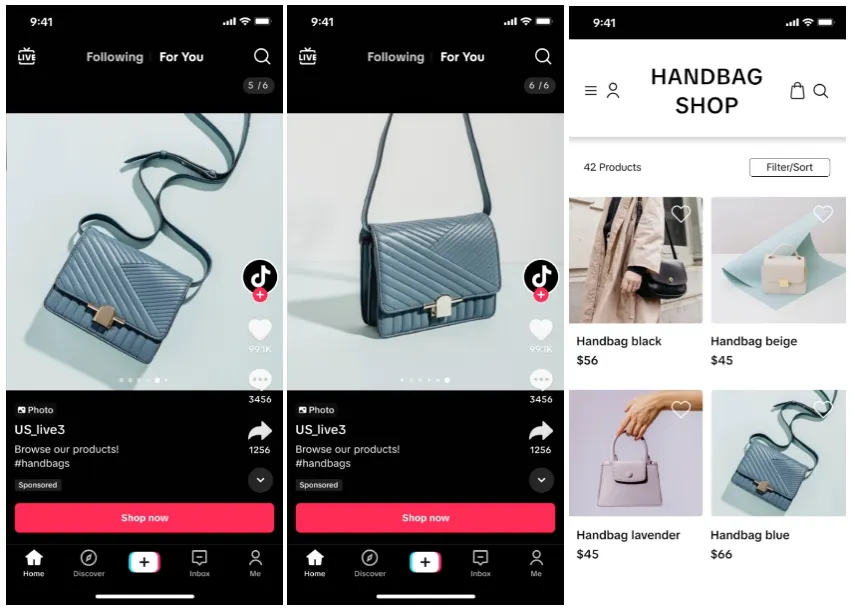
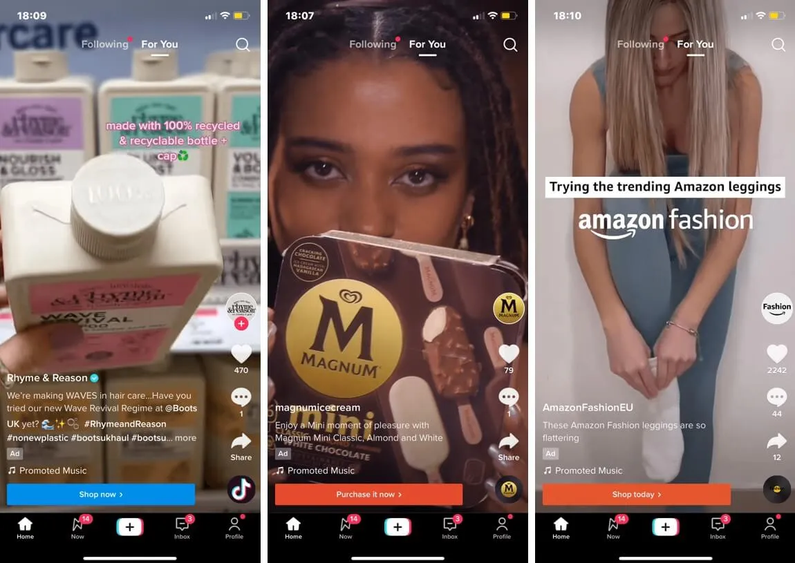

hello world;
hello world; 
Have feedback, questions, or just want to say hello? Feel free to reach out!
michelle.alice.quin@gmail.com
One of my major recent studies was on ad formats and creative fatigue. On TikTok, there are various types of advertisements, ranging from native video ads (designed to look like an "organic" video) to brand ads to catalog/carousel ads. There's also a push towards AI-generated or enhanced ads, but this has led to previous controversy over copyright, inappropriate music, brand violations, and overall quality dissatisfaction. The goal of my study was to understand: why are catalog and carousel image ads unpopular on TikTok but popular on Instagram? What would improve the creation and performance of native video ads, and how can we leverage AI in content creation in an appropriate and helpful way?
A major issue advertisers and consumers alike have with TikTok ads is creative fatigue (when the view and click rates for a specific image/video decline and flatline), and content on TikTok fatigues much faster than on other platforms, meaning creators and advertisers need to constantly produce new creative content and try different creative formats. There's distrust over automation and a lack of understanding on how to create well-received content that has longevity on TikTok, and through my interviews with creators, agencies, small businesses, and major brands in Europe and North America, I uncovered areas where TikTok could improve in creation, data and insights, and automation/AI tooling. As a result of my research, the product team has made changes to how and where music/enhancements are recommended, the overall catalog image creation flow, and improved auto-recognition of products and links in videos.


hello world; Have feedback, questions, or just want to say hello? Feel free to reach out!
michelle.alice.quin@gmail.com